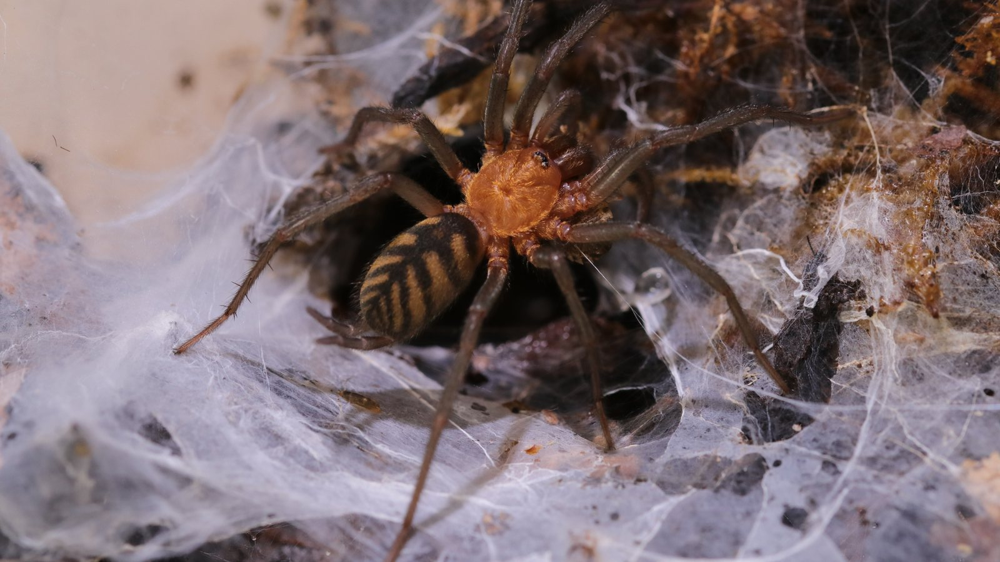
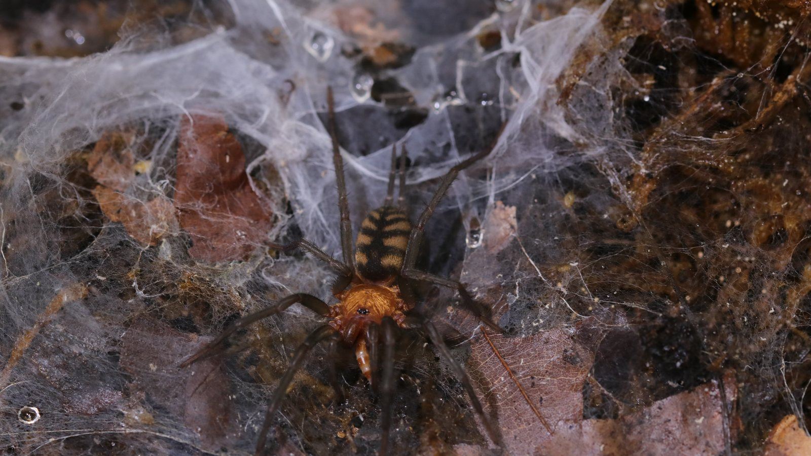
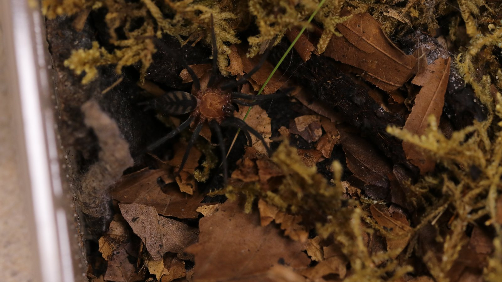

A South American curtain-web spider in Dipluridae, not a tarantula. It builds dense sheet and funnel-like silk that links a retreat to the surrounding hunting surface.
Species profile · Current resident
Linothele fallax
Curtain-web spider
This Linothele fallax represents the other-spider side of the current collection. Its profile photograph shows the orange carapace and distinctly patterned abdomen.

Scientific nameLinothele fallax
FamilyDipluridae
Native rangeBolivia and Brazil
TaxonomyAccepted species
SexUnknown
In the wild
Natural history.
The orange carapace, patterned abdomen, and long spinnerets make the animal visually distinct. Its web architecture is an equally important part of the profile.
The enclosure provides a dark retreat and many points for silk attachment. Feeding is observed at the web rather than by exposing or handling the resident.
Taxonomy and range
Linothele fallax is a South American mygalomorph in Dipluridae rather than Theraphosidae. It was originally described in Diplura and later transferred to Linothele, a genus whose species occupy a remarkable range of ground, bank, rock-wall, and elevated forest microhabitats.
Burrows, shelter, and activity
L. fallax has been recorded from natural crevices near ground level and from burrows. Long spinnerets lay dense silk into a curtain or sheet leading back to the refuge, turning a small hiding place into a much larger vibration-sensitive hunting surface.
Feeding ecology
The spider waits where signals from the curtain web converge, then rushes onto the sheet to capture arthropods. Food can be taken back to the silk-lined refuge. Research on its web material also shows why the silk itself deserves attention as a biological structure, not simply scenery.
Defence, senses, and movement
This is a fast mygalomorph without the urticating-hair defence of many New World tarantulas. Retreat, speed, and venom used for prey make a secure enclosure and hands-off observation especially important.
Life in the collection
A living colony.
This Linothele fallax broadens the collection beyond tarantulas. Its curtain-web spider identity, patterned abdomen, feeding video, and care history give the profile a different biological and visual character from the theraphosid residents.



From Instagram
Posts & reels.
From the channel
Related viewing.
Introvertebrates on YouTube
Spider snapshot: Linothele fallax
A compact species snapshot of the tiger curtain-web spider.
Personal observations
From the Codex.
Introvertebrates Codex
Current resident · care history
A privacy-safe summary of this resident’s time in care, feeding outcomes, molts, and measurements. These are observations from the Introvertebrates collection, not species-wide averages.
Awaiting a privacy-reviewed Codex export. No invented statistics are shown.
Never published here: raw notes, record IDs, seller or breeder details, enclosure identifiers, local file paths, or exact private event dates.
Continue exploring
Related profiles.


Read further
Sources.
- World Spider Catalog — genus LinotheleView the source.
- Taxonomy — habitat and natural history of LinotheleView the source.
- ACS Omega — material properties of the Linothele fallax webView the source.